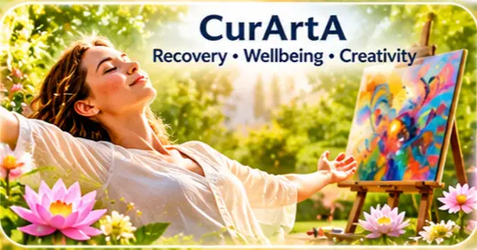
Mehr erfahren →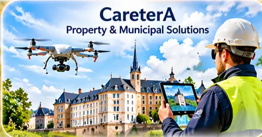
Mehr erfahren →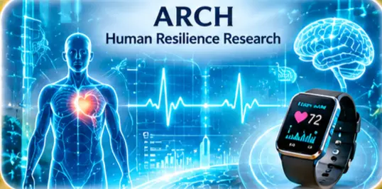
Mehr erfahren →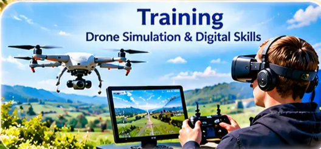
Mehr erfahren →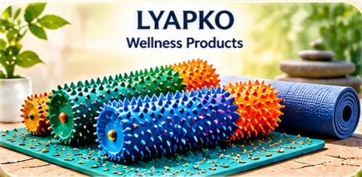
Mehr erfahren →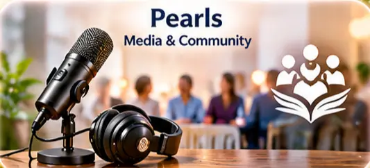
Mehr erfahren →Menschen, Ideen und Innovation verbinden, um stärkere Gemeinschaften aufzubauen.
Update (Juni 2026): Der Vorschlag wurde nicht ausgewählt. KOLOSVIT ASBL schätzt die Teilnahme und entwickelt die Initiative weiter.
KOLOSVIT ASBL ist ein innovativer Verein mit Sitz in Luxemburg, in dem Zukunftstechnologien realen menschlichen Bedürfnissen dienen. Wir glauben, dass digitale Bildung, mentale Resilienz und kulturelle Zugehörigkeit keine Luxusgüter sind — sie sind die Grundlage für ein würdiges Leben in einem neuen Land.
Gegründet von Ukrainern, die in Europa leben, baut KOLOSVIT Brücken zwischen Gemeinschaften, Generationen und Disziplinen. Wir arbeiten an der Schnittstelle von Kultur, Wissenschaft und sozialer Fürsorge — immer geleitet von Menschlichkeit zuerst.
Mindestens 90 % unserer Ressourcen fließen direkt in unsere Mission: Unterstützung vertriebener Menschen, Entwicklung von Bildungsprogrammen und Förderung bedeutungsvoller kultureller Verbindungen in ganz Europa.
„Wir sind durch gemeinsame Werte vereint — Menschlichkeit, Wissen und die Überzeugung, dass jedes Talent zählt. Jeder Mensch, der mit Verlust ankommt, kommt auch mit Gaben an. Unsere Aufgabe ist es, diesen Gaben zu helfen, aufzublühen.“
🖥 Digitale Bildung — Autonome Systeme, KI-Kompetenz und Zukunftsfähigkeiten.
🧠 Neuro-Resilienz — Das ARCH-Programm für kognitive Gesundheit und Stressbewältigung.
🤝 Soziale Integration — Kulturveranstaltungen, Wellness und Gemeinschaftsgefühl.
🌿 Umwelt — Ökologische Verantwortung als bürgerlicher Wert.
CAP · Ein Partner. Mehrere Lösungen.
Die KOLOSVIT Community Activation Platform (CAP) ist ein innovatives Ökosystem, das Gemeinschaftswohl, kommunale Aktivierung, Kulturprogramme und digitale Innovation in einer koordinierten Partnerschaft vereint. Anstatt isolierte Projekte anzubieten, stellt KOLOSVIT Gemeinden, Organisationen und Gemeinschaften eine flexible Plattform zur Verfügung.
Plattform-Module
🏙️ CareterA
Community & Immobilien-Aktivierungssystem — KI-gestützte kommunale Steuerung, Immobilienüberwachung und Gemeinschaftsaktivierung.
💚 ARCH
Gemeinschaftliches Wellbeing-Modul — Prävention, Resilienz und KI-gestützte Wellbeing-Programme.
💎 Pearls of Luxembourg
Gemeinschaftsveranstaltungen & Kultur — inspirierende Geschichten, Fähigkeiten und Verbindungen.
🚁 Digitale Innovation
Drone Academy, KI-Tools, digitale Kompetenzen und Technologiepartnerschaften.
🇪🇺 Europäische Projekte
Unterstützung beim Zugang zu Interreg, CERV, EFRE, ESF und anderen europäischen Förderprogrammen.
Die Mitgliedschaft basiert auf gegenseitigem Austausch. Wir stellen zwei Fragen:
✶ Was suchen Sie?
✶ Was können Sie anbieten?
Wer nur empfangen möchte, ohne beizutragen, tritt diesem Netzwerk nicht bei — das Prinzip einer lebendigen Gemeinschaft.
Unser Partnernetzwerk wächst. Heute umfasst es 53 potenzielle ukrainische Partner — 48 Unternehmen und 5 zivilgesellschaftliche Organisationen — mit Expertise in Fertigung, Technologie, Sozialdiensten und Innovation. Wir expandieren aktiv in Europa und darüber hinaus.
Auf der Grundlage unserer Memoranda können wir helfen, wenn Sie an Fertigungsaktivitäten in der Ukraine interessiert sind.
Im Mai 2026 starteten wir unser erstes Pilotprojekt — Drohnen-Simulator-Training — mit 6 Liftoff-Lizenzen. Wir suchen einen festen Standort und geeignete Ausstattung für unser erstes Trainingsklassenzimmer.
Entwicklungspartner: LuGus Studios (Belgien, Simulationstechnologie) und Velosidron (Memorandum zur ARCH-Entwicklung).
Simulation • Digitales Lernen • Berufliche Fähigkeiten • Trainings-F&E
KOLOSVIT ASBL entwickelt innovative Trainingskonzepte, die digitale Technologien, Simulation, praktisches Lernen und berufliche Kompetenzentwicklung verbinden.
Unser Ziel ist es, Bildungseinrichtungen, Unternehmen und Branchenpartnern zu helfen, neue Lernmöglichkeiten zu schaffen, auf veränderte Anforderungen des Arbeitsmarkts zu reagieren und Menschen auf neue technische und berufliche Rollen vorzubereiten.
Wir gehen über herkömmliches digitales Training hinaus. Unser Ansatz umfasst die Erforschung beruflicher Tätigkeiten, die Gestaltung praxisnaher Lernpfade, die Entwicklung spezialisierter Trainingsmaterialien und die Erstellung simulationsbasierter Übungen, die an reale Arbeitsumgebungen angepasst sind.
Simulationsbasiertes Lernen für Schulen, junge Menschen, erwachsene Lernende und berufliche Entwicklungsprogramme.
Mögliche Aktivitäten:
Praxisnahes, simulationsgestütztes Lernen für Dachdeckung, Dachsanierung und Arbeiten an der Gebäudehülle.
Mögliche Schulungsthemen:
Trainingskonzepte, die Baukompetenzen, erneuerbare Energien und digitale Technologien verbinden.
Mögliche Themen:
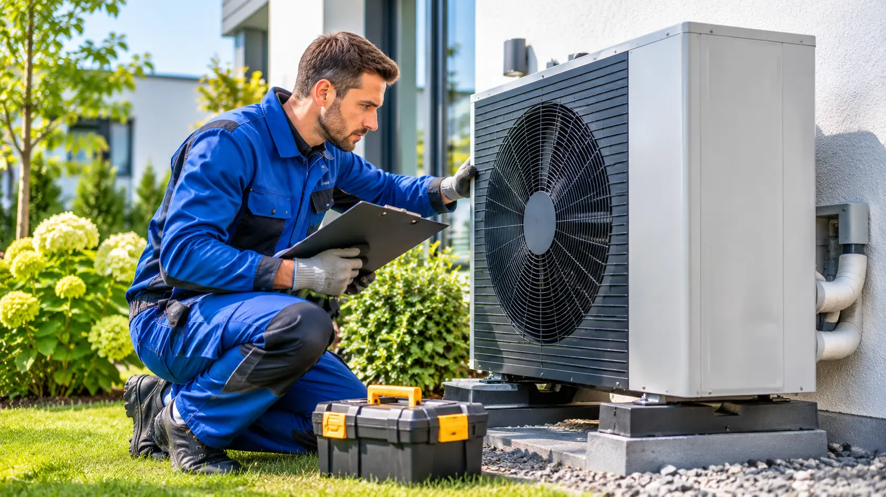
Entwicklung einführender und praktischer Lernmodule für technische Berufe rund um die Energieeffizienz von Gebäuden.
Mögliche Themen:
Simulations- und digitale Lernkonzepte für technische Wartungs- und Inspektionstätigkeiten.
Mögliche Themen:
Praktische Lernkonzepte mit Drohnen als Werkzeugen für Inspektion, Dokumentation und Überwachung.
Mögliche Anwendungen:
Aktueller Pilot: Im Mai 2026 haben wir unser erstes Pilotprojekt gestartet — Training am Drohnensimulator — mit 6 Liftoff-Lizenzen. Entwicklungspartner: LuGus Studios (Belgien) und Velosidron.
KOLOSVIT ASBL untersucht auch die Entwicklung maßgeschneiderter Trainingslösungen für Unternehmen, Bildungseinrichtungen, Berufsverbände und Branchenpartner.
Unsere F&E-orientierten Leistungen können Folgendes umfassen:
Wir möchten berufliches Wissen und betriebliche Anforderungen in zugängliche, strukturierte und praxisnahe Trainingssysteme umwandeln.
Simulation beschränkt sich nicht auf Drohnenbetrieb oder technische Berufe. Wir untersuchen auch das Potenzial szenariobasierten Lernens in Branchen, in denen Aufmerksamkeit, Entscheidungsfindung, Koordination und operative Bereitschaft entscheidend sind.
Mögliche Anwendungen:
Diese Aktivitäten können mit Branchenspezialisten entwickelt und mit der Methodik zur menschlichen Leistungsfähigkeit unserer ARCH-Initiative verknüpft werden.
Wir ersetzen keine verpflichtenden, regulatorischen Schulungen oder Lizenzierungsstandards. Stattdessen bieten wir ergänzende fortgeschrittene Module zu Human Factors, Müdigkeitsbewusstsein und simulationsbasierter Resilienz an.
Wir kombinieren mehrere sich ergänzende Elemente:
KOLOSVIT ASBL ist an einer Zusammenarbeit interessiert mit:
Wir freuen uns über Partner, die neue Trainingsprogramme entwickeln, simulationsbasierte Lernmethoden testen, Arbeitskräfte auf neue Berufe vorbereiten und praktische Fachkräftelücken schließen möchten.
Eine Initiative von KOLOSVIT ASBL, Luxemburg.
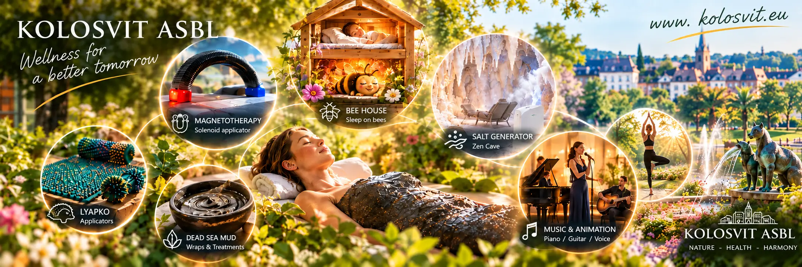
Erholung • Wellbeing • Kreativität
CurArtA ist eine integrierte Plattform für menschliche Erholung, Wellbeing, Kreativität und soziale Verbundenheit.
CurArtA mit Sitz in Luxemburg ist eine Initiative von KOLOSVIT ASBL. Sie entwickelt Programme, die körperliche, emotionale und soziale Erholung durch eine Kombination aus erholsamen Praktiken, natürlichen Wellbeing-Ansätzen, kreativen Aktivitäten und sinnvollen menschlichen Verbindungen unterstützen.
Unsere Programme richten sich an Menschen mit langanhaltendem Stress, emotionaler Erschöpfung, Vertreibung, sozialer Isolation, schwierigen Lebensübergängen oder den dauerhaften Anforderungen pflegender und helfender Berufe.
Wir verbinden natürliche Wellbeing-Praktiken, die Entspannung und die Erholung des Körpers unterstützen.
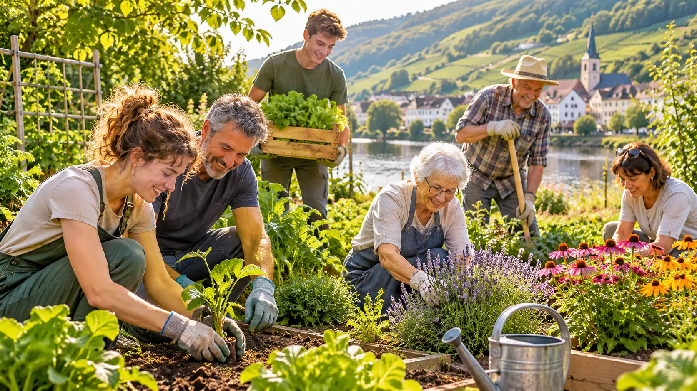
Wir entwickeln Gemeinschaftsgärten und soziale Grünräume, die Wellbeing und Erholung im Einklang mit der Natur fördern.
CurArtA verbindet verschiedene Ansätze zu thematischen Programmen, die auf die Bedürfnisse der Teilnehmenden und Partnerorganisationen zugeschnitten sind. Beispiele:
Wir glauben, dass Erholung ein mehrdimensionaler Prozess ist. Ruhe, Bewegung, Kreativität, Natur, unterstützende Beziehungen und sinnvolle Erfahrungen können alle zum persönlichen Wohlbefinden beitragen.
CurArtA entwickelt nicht-klinische Programme, die professionelle Gesundheitsversorgung, psychologische Unterstützung oder medizinische Rehabilitation ergänzen, aber nicht ersetzen.
Unsere Aktivitäten werden an verschiedene Gruppen angepasst und können in Zusammenarbeit mit qualifizierten Fachleuten und Partnerinstitutionen entwickelt werden.
Wir freuen uns über die Zusammenarbeit mit Gemeinden, sozialen Organisationen, Gesundheits- und Wellnesseinrichtungen, Hotels, Kulturzentren, Stiftungen, Künstlern, Praktikern und internationalen Partnern.
Detaillierte Methodiken und Partnerschaftsbedingungen sind auf Anfrage unter NDA erhältlich.
Ob Sie eine erholsame Erfahrung suchen, ein Programm für Ihre Gemeinschaft oder Ihr Team organisieren möchten oder Partner werden wollen — CurArtA lädt Sie zur Zusammenarbeit ein.
Gemeinsam schaffen wir Möglichkeiten für Erholung, Wellbeing, Kreativität und menschliche Verbundenheit.
Eine Initiative von KOLOSVIT ASBL · www.kolosvit.eu
Diese Seite handelt von unseren Produkten und Partnerschaften: dem offiziellen Vertrieb von LYAPKO, ausgewählter Wellbeing-Ausstattung und der Zusammenarbeit mit Wellnesszentren, Thermalkurorten, Hotels und Organisationen.
Programme für Menschen — Erholung, Entspannung, kreative und gemeinschaftliche Aktivitäten — sind auf der Seite CurArtA beschrieben.
Unsere Produkte sind Wellness-Produkte für den nicht-klinischen Gebrauch. Sie ersetzen keine medizinische Diagnose, Behandlung oder professionelle Rehabilitation.
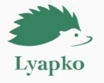
KOLOSVIT ASBL ist offizieller Vertriebspartner für LYAPKO-Applikatoren und -Produkte in Luxemburg, mit Vertriebsrechten, die sich auf die Großregion erstrecken.
Wir arbeiten mit Wellness-Fachleuten, Spas, Thermalzentren und anderen Organisationen zusammen, die LYAPKO-Produkte in ihre Körperpflege- und Entspannungsprogramme integrieren möchten.
Die Produktion begann 1996, als der Arzt und Reflexologe Nickolay Lyapko die ersten Mehrnadel-Applikatoren entwickelte. Laut Hersteller hält er über 150 Patente in 20 Ländern; das Unternehmen produziert in der Ukraine nach dem Qualitätssystem ISO 9001:2015, und Anfang 2020 waren weltweit über 7 Millionen Applikatoren im Einsatz.
LYAPKO bietet auch Premium-Produkte mit Silbernadeln an.
Hier finden Sie alle LYAPKO-Produkte sowie die Gebrauchs- und Pflegeanleitungen des Herstellers. lyapko.ua/en →
Produktvorführungen, professionelle Präsentationen, Auswahlunterstützung, Integration in Wellness-Programme, Pilotprojekte und professionelle Zusammenarbeit mit Thermalresorts, Spas, Wellness-Zentren und Erholungseinrichtungen.
Die Luxemburger Präsentation von KOLOSVIT konzentriert sich auf Wellness, Entspannung, Körperpflege und Erholung. Medizinische Aussagen aus anderen Ländern sollten nicht als in Luxemburg oder anderswo in der EU anwendbar interpretiert werden. Bei gesundheitlichen Beschwerden wenden Sie sich bitte an eine qualifizierte medizinische Fachperson.
Magnetische Wellbeing-Auflagen mit Permanentmagneten und Turmalin für Entspannungsräume und Wellbeing-Programme. Angeboten als Wellness-Produkte, ohne therapeutische Aussagen.
In EntwicklungWir freuen uns über die Zusammenarbeit mit Thermalkurorten, Wellnesszentren, Rehabilitationseinrichtungen, Hotels, professionellen Praktikern und Organisationen, die zugängliche Wellbeing- und Erholungsprogramme entwickeln möchten.
Unser Ansatz ist modular: Einzelne Aktivitäten können separat eingeführt oder zu einem umfassenderen Wellbeing-Programm kombiniert werden.
Eine Initiative von KOLOSVIT ASBL.
Geschichten · Menschen · Verbindungen
Eine Medien-, Kommunikations- und Community-Plattform von KOLOSVIT ASBL
Pearls of Luxembourg ist eine Medien- und Community-Plattform, die von KOLOSVIT ASBL geschaffen wurde, um bemerkenswerte Menschen, Talente, Organisationen und Initiativen zu entdecken, vorzustellen und zu vernetzen.
Wir glauben, dass jede Gemeinschaft wertvolle Geschichten, Wissen und Erfahrungen hat, die es wert sind, geteilt zu werden. Pearls bringt diese Geschichten durch Live-Veranstaltungen, Interviews, Podcasts, Fotografie, Videoproduktionen und gemeinsame Medienprojekte zu einem breiteren Publikum.
Über das Erzählen von Geschichten hinaus schafft Pearls Möglichkeiten für berufliche Sichtbarkeit, Networking, Wissensaustausch, Kulturförderung und sinnvolle Partnerschaften.
Pearls of Luxembourg ist eine neue Initiative. Die ersten Pilotabende werden vorbereitet. Die folgenden Formate beschreiben, was wir entwickeln und Schritt für Schritt mit Partnern und Gästen testen werden.
Drei Gäste. Drei Geschichten. Drei Träume für Luxemburg.
Ein intimer Abend, an dem Unternehmer, Wissenschaftler, Künstler und Fachleute ihre Erfahrungen teilen. Jeder Gast erzählt eine Geschichte aus seiner beruflichen Welt, etwas über Luxemburg, das mehr Menschen kennen sollten, und einen Traum — was er verändern würde, wenn er könnte.
Pilotabende in VorbereitungJeder Pearls-Abend beginnt mit Menschen und endet mit neuen Verbindungen. Nach jedem Abend empfiehlt jeder Gast die nächste bemerkenswerte Person — und möglicherweise den nächsten Ort. Das Netzwerk wächst organisch, eine Geschichte nach der anderen.
„Ich suche keine Prominenten. Ich suche Menschen, die Menschen verbinden.“
Alkohol ist nicht Teil des Pearls-Erlebnisses. Essen ist, wenn vorhanden, immer Teil des Programms — nie ein Standardbuffet.
Pearls-Abende sind an bemerkenswerten Orten in Luxemburg geplant — Kulturzentren, privaten Galerien, historischen Räumen, Wellness-Zielen wie Mondorf-les-Bains sowie Partnerrestaurants oder -studios.
Wir freuen uns über langfristige Partnerschaften mit Veranstaltungsorten. Einen Raum für Pearls-Abende bereitzustellen ist ein wertvoller Sachbeitrag — und eine natürliche Gelegenheit, eine engagierte, werteorientierte Gemeinschaft kennenzulernen.
Pearls of Luxembourg ist eine Initiative von KOLOSVIT ASBL — einer gemeinnützigen Vereinigung. Unser geplantes Modell ist transparent und auf langfristige Tragfähigkeit ausgelegt.
Pearls of Luxembourg ist mehr als eine Reihe von Abenden. Es ist eine langfristige Gemeinschaft, in der Menschen einander inspirieren, von Experten lernen, neue Projekte schaffen und Freundschaften und dauerhafte Verbindungen aufbauen.
Unser Ziel ist es, eine der vertrauenswürdigsten Gemeinschaften Europas aufzubauen — verwurzelt in Luxemburg, offen für die Welt.
Denn jede Perle beginnt mit etwas Kleinem — und wächst zu etwas Bleibendem.
Wir laden Gemeinden, Unternehmen, Kultureinrichtungen, NGOs, Stiftungen, Fachleute und Medienorganisationen ein, durch Veranstaltungen, Interviews, Sponsoring, Content-Produktion und gemeinsame Kommunikationsinitiativen zusammenzuarbeiten.
Pearls of Luxembourg ist eine Plattform für Menschen und Organisationen, die etwas Wertvolles zu teilen haben — und für ein Publikum, das bereit ist, es zu entdecken.
Wir bereiten die ersten Pilotabende vor und freuen uns über Veranstaltungsorte, Partner, Gäste und Medienorganisationen, die Pearls von Anfang an mitgestalten möchten.
Eine Initiative von KOLOSVIT ASBL.
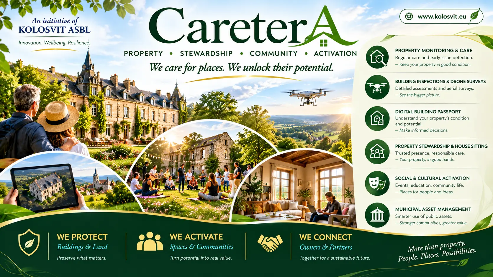
Immobilien-Intelligenz, Pflege und Aktivierung von Gemeinschaften
Von der Pflege von Immobilien bis zur intelligenteren Nutzung von Gebäuden, Flächen und Gemeinschaftsvermögen.
CareterA ist eine Initiative von KOLOSVIT ASBL, die Eigentümern, Gemeinden und Organisationen hilft, ihre Gebäude und Grundstücke besser zu verstehen, zu überwachen, zu erhalten und zu aktivieren.
Wir verbinden praktische Immobiliendienste, digitale Überwachung, Gebäudebewertung und neue Ansätze für die Nutzung untergenutzter Räume. Unser Ziel ist nicht nur, Immobilien zu betreuen, sondern ihren Zustand, ihr Potenzial und ihren möglichen Wert für die Gemeinschaft zu erkennen.
CareterA wird Schritt für Schritt entwickelt — von praktischen immobilienbezogenen Leistungen hin zum kommunalen Vermögensmanagement und zur Aktivierung von Gemeinschaften.
Praktische Pflege für Gebäude und Grundstücke
Wir möchten praktische Inspektions-, Überwachungs- und Pflegelösungen für leerstehende und genutzte Immobilien anbieten — öffentlich, kommunal und privat.
Einige spezialisierte Inspektions- und Überwachungsleistungen befinden sich in Entwicklung und können mit qualifizierten externen Partnern erbracht werden.
CareterA entwickelt das Konzept eines Digitalen Gebäudepasses — ein strukturiertes digitales Profil, das Eigentümern und Organisationen helfen kann, Zustand, Eigenschaften und mögliche künftige Nutzung einer Immobilie zu verstehen.
Je nach Gebäude und verfügbaren Informationen kann die Bewertung Folgendes umfassen:
Der Digitale Gebäudepass ist ein sich entwickelndes Konzept. Er soll Eigentümer und Entscheidungsträger unterstützen, nicht jedoch zertifizierte technische Inspektionen, Ingenieurgutachten oder gesetzliche Energieaudits ersetzen.
Untergenutzte Vermögenswerte in Chancen verwandeln
Gemeinden verwalten oft ein vielfältiges Portfolio aus Gebäuden, Flächen und öffentlichen Räumen. Manche Objekte sind untergenutzt, warten auf Sanierung oder haben keinen klar definierten künftigen Zweck.
CareterA möchte Gemeinden helfen, diese Objekte zu identifizieren, ihren Zustand zu verstehen und praktische Nutzungsmöglichkeiten zu erkunden.
Ehemalige Schulen und öffentliche Gebäude · Höfe und landwirtschaftliche Anwesen · Historische Gebäude · Gemeinschaftseinrichtungen · Parks und Gärten · Öffentliche Flächen und Außenräume · Ungenutzte Gewerbe- und Industrieräume.
Ziel ist es, Gemeinden zu helfen, von fragmentierten Immobilieninformationen zu einem klareren Verständnis ihrer Vermögenswerte und der damit verbundenen Chancen zu gelangen.
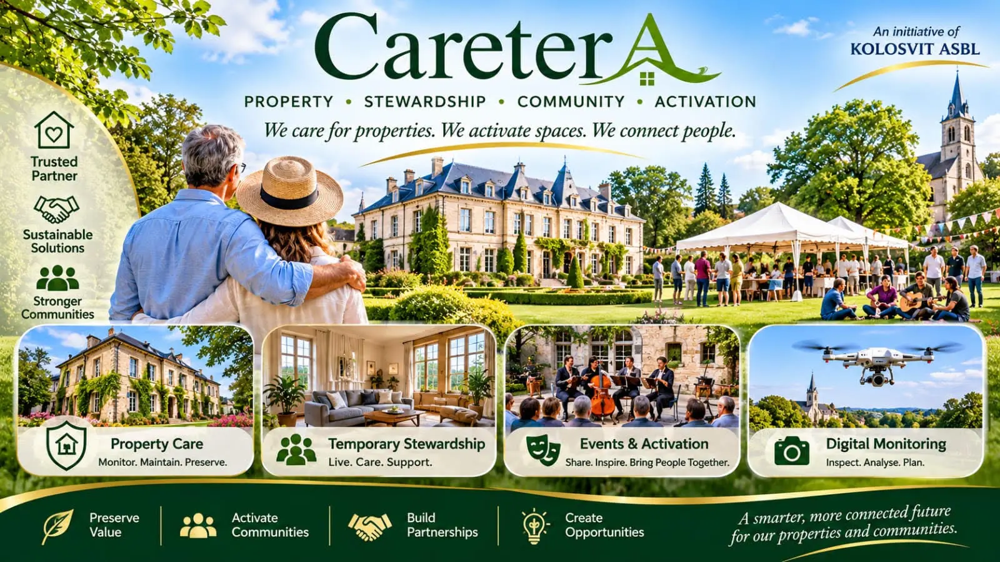
Gebäude sind nicht nur Vermögenswerte. Sie können Orte werden, an denen Gemeinschaften wachsen.
Die Aktivierung von Immobilien kann der Ausgangspunkt für etwas Größeres sein.
Ein ungenutztes Gebäude, eine ehemalige Schule, ein Hof, ein Garten oder ein öffentlicher Raum kann zu einem Ort für Bildung, Kultur, soziale Aktivitäten, Wellbeing, lokales Unternehmertum oder Zusammenarbeit in der Gemeinschaft werden.
Beispiel: Umwandlung ungenutzter kommunaler Flächen und Parks in Gemeinschaftsgärten, soziale landwirtschaftliche Räume und Orte für gartenbezogenes Wellbeing.
Hier verbindet sich CareterA mit dem umfassenderen Konzept der KOLOSVIT Community Activation Platform (CAP). CAP ist ein sich entwickelnder Rahmen, der kommunale Vermögenswerte, lokale Bedürfnisse, Organisationen, Unternehmen, Vereine und Projektpartner zusammenbringt.
Statt jede Initiative als isoliertes Projekt zu behandeln, geht es darum, Verbindungen zwischen verfügbaren Räumen, Bedürfnissen der Gemeinschaft und den Menschen oder Organisationen zu finden, die sinnvolle Aktivitäten schaffen können.
CAP ist ein umfassenderes Entwicklungskonzept von KOLOSVIT. Seine Bausteine können schrittweise erkundet und umgesetzt werden, abhängig von lokalen Bedürfnissen, verfügbaren Ressourcen und Partnerschaften.
Eine langfristige Vision für intelligenteres Immobilien- und Gemeinschaftsmanagement
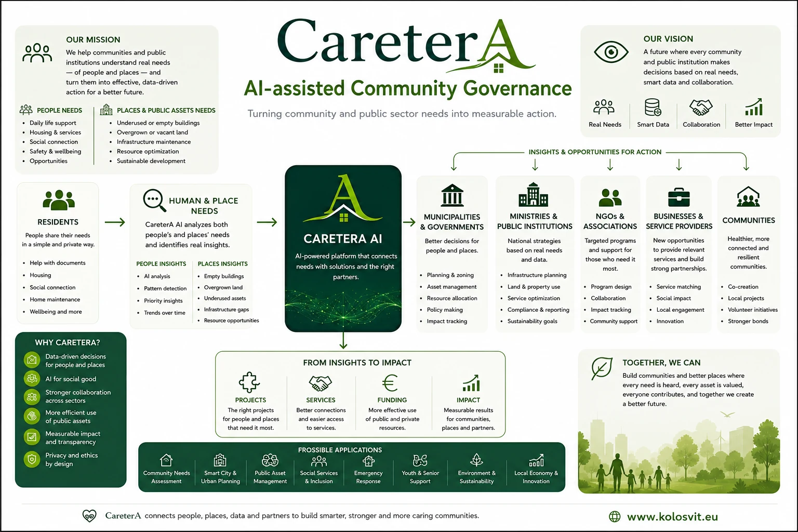
Mit der Entwicklung von CareterA können die Erfahrungen und Informationen aus Immobilienüberwachung, Gebäudebewertungen und kommunaler Zusammenarbeit die Grundlage für digitale Werkzeuge bilden.
Die langfristige Vision ist eine KI-gestützte Plattform, die Gemeinden und Partnern helfen könnte:
Digitale Werkzeuge und KI sollen menschliches Urteilsvermögen und Entscheidungsfindung unterstützen — nicht die fachliche Verantwortung oder demokratische kommunale Prozesse ersetzen.
CareterA entwickelt sein Servicemodell und sucht die Zusammenarbeit mit Gemeinden, Immobilieneigentümern, Organisationen und technischen Partnern.
Wir freuen uns über Gelegenheiten, um:
Haben Sie eine Immobilie, einen Raum oder eine lokale Herausforderung, die zur Chance werden könnte? Lassen Sie uns gemeinsam erkunden, was entwickelt werden kann.
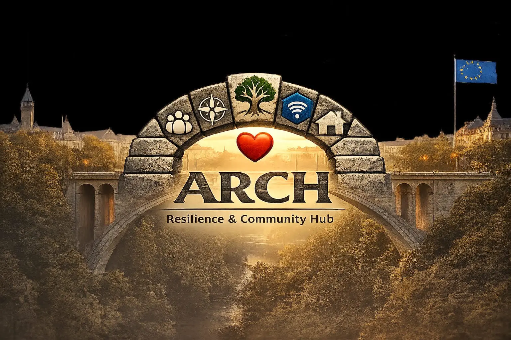
Menschliche Leistungsfähigkeit, operative Bereitschaft und Resilienz
Ein KI-gestütztes Ökosystem, um menschliche Leistungsfähigkeit zu verstehen, operative Bereitschaft zu stärken und Resilienz in Organisationen, kritischer Infrastruktur und Gemeinschaften aufzubauen.
Menschen verstehen. Leistung stärken. Resilienz aufbauen.
ARCH ist eine sich entwickelnde Innovationsinitiative von KOLOSVIT ASBL, Luxemburg, die integrierte Ansätze für menschliche Leistungsfähigkeit, Wellbeing, operative Bereitschaft und Resilienz erkunden und entwickeln soll.
Sie verbindet menschenzentrierte Technologien, freiwilliges Wellbeing-Monitoring, datengestützte Analyse, simulationsbasiertes Training, Entwicklung der kognitiven Leistungsfähigkeit und Erholungspraktiken.
ARCH möchte Organisationen helfen, die menschlichen Faktoren besser zu verstehen, die Leistung, Entscheidungsfindung, Sicherheit, Anpassungsfähigkeit und Wellbeing beeinflussen — besonders in Umgebungen, in denen Menschen unter Druck arbeiten, komplexe Prozesse steuern oder große Verantwortung tragen.
Von Finanzinstituten und Betreibern kritischer Infrastruktur über Luftfahrt, Bahnsysteme, Gemeinden und Bildungseinrichtungen bis zu lokalen Gemeinschaften ist ARCH als flexibles Ökosystem gedacht, das an unterschiedliche operative und gesellschaftliche Bedürfnisse angepasst werden kann.
Unser Ansatz erkennt an, dass organisatorische Resilienz nicht allein von Technologie und Infrastruktur bestimmt wird. Menschen, ihre Fähigkeiten, ihr Zustand, ihre Entscheidungsfähigkeit und ihre Anpassungsfähigkeit sind ebenso wichtig.
Vom Bewusstsein für den menschlichen Zustand zu stärkerer organisatorischer Resilienz
ARCH baut auf der Beziehung zwischen menschlicher Leistungsfähigkeit, operativen Umgebungen und organisatorischer Resilienz auf. Wir möchten einen integrierten Ansatz entwickeln, der vier sich ergänzende Phasen verbindet:
Relevante Indikatoren erkunden, die menschliche Leistungsfähigkeit und Wellbeing beeinflussen können.
Je nach Programm kann dies umfassen:
Ziel ist ein besser fundiertes Verständnis von Faktoren, die die Leistung beeinflussen können — ohne persönliche Beobachtung in Mitarbeiterüberwachung zu verwandeln.
Strukturierte Bewertung und, wo angemessen, KI-gestützte Analysewerkzeuge nutzen, um Muster und Trends zu erkennen, die für die menschliche Leistungsfähigkeit relevant sind.
Mögliche Analysebereiche:
ARCH möchte relevante Informationen in verständliche Erkenntnisse übersetzen, die Einzelpersonen, Programmkoordinatoren und Organisationen unterstützen können.
Individuelle und kollektive Fähigkeiten durch praktisches Lernen und szenariobasierte Aktivitäten stärken.
Mögliche Formate:
ARCH verbindet ihre Methodik zur menschlichen Leistungsfähigkeit mit der separaten KOLOSVIT-Initiative „Training & Capacity Building“.
Erholung, Selbstregulation und kontinuierliche Verbesserung unterstützen.
Je nach Zielgruppe und Programm können Aktivitäten umfassen:
Es geht nicht nur darum, Schwierigkeiten zu messen, sondern Menschen und Organisationen zu helfen, praktische Wege zu entwickeln, damit umzugehen.
ARCH ist als modulares Ökosystem konzipiert. Ihre Methodik kann an verschiedene Branchen, Berufsgruppen und gemeinschaftliche Umgebungen angepasst werden. Die folgenden Bereiche stellen mögliche Anwendungen für Entwicklung, Forschung und Pilotkooperation dar.
Finanzorganisationen arbeiten in Umgebungen mit komplexen Informationsflüssen, strengen Fristen, regulatorischen Anforderungen, Marktunsicherheit und hoher Verantwortung.
Mitarbeitende in AML/KYC, Compliance, Risikomanagement, Handel, Investmentanalyse, Finanzoperationen und Management arbeiten häufig mit großen Informationsmengen und Entscheidungen, die anhaltende Aufmerksamkeit erfordern.
ARCH untersucht, wie Programme zu menschlicher Leistungsfähigkeit und Resilienz diese Teams unterstützen können.
ARCH kann Finanzinstituten helfen, Wege zu erkunden, das Bewusstsein für belastungsbezogene Risiken zu verbessern, die individuelle Resilienz zu stärken, gesündere Arbeitspraktiken zu fördern und nachhaltigere Teamleistung zu entwickeln.
Programmergebnisse können anhand vereinbarter Indikatoren wie Teilnahme, selbstberichtetem Wellbeing, wahrgenommener Arbeitsbelastung, Trainingsergebnissen und organisatorischem Feedback bewertet werden.
Banken, Investmentfonds, Vermögensverwalter, AML/KYC-Abteilungen, Compliance- und Risikoteams, FinTech-Unternehmen, Versicherer und Finanzdienstleister.
Energiesysteme beruhen auf komplexer technischer Infrastruktur und Menschen, die wechselnde Betriebsbedingungen überwachen, koordinieren und darauf reagieren müssen.
Personal in Leitwarten, Disponenten, Wartungsteams, Feldingenieure und Fachleute für Notfalleinsätze können mit anspruchsvollen Dienstplänen, hoher Verantwortung und Situationen konfrontiert sein, die anhaltende Aufmerksamkeit erfordern.
ARCH untersucht die Dimension menschlicher Leistungsfähigkeit der operativen Resilienz in diesen Umgebungen.
ARCH kann die Entwicklung menschenzentrierter Resilienzprogramme unterstützen, die bestehende Praktiken der Betriebssicherheit, des Personalmanagements und des Infrastrukturschutzes ergänzen.
Der Ansatz kann an konventionelle Energieerzeugung, Stromverteilung, erneuerbare Energien, Netzmanagement, Versorgungsunternehmen und andere kritische Infrastrukturumgebungen angepasst werden.
Energieerzeuger, Strom- und Gasverteilnetzbetreiber, Unternehmen für erneuerbare Energien, Netzleitzentralen, Versorgungsunternehmen, Infrastrukturbetreiber und technische Dienstleister.
Der Eisenbahnbetrieb erfordert Koordination zwischen Triebfahrzeugführern, Verkehrsleitern, Disponenten, Infrastrukturteams, Wartungspersonal und Bahnhofspersonal.
Betriebliche Zuverlässigkeit hängt nicht nur von technischen Systemen ab, sondern auch von Aufmerksamkeit, Kommunikation, Situationsbewusstsein und der Fähigkeit, angemessen auf veränderte Umstände zu reagieren.
ARCH untersucht Programme zur menschlichen Leistungsfähigkeit, die an Arbeitsumgebungen im Bahnbetrieb angepasst sind.
ARCH kann Bahnorganisationen unterstützen, ein systematischeres Verständnis menschlicher Faktoren zu entwickeln, die Resilienz der Belegschaft zu stärken und bestehende Sicherheits- und Betriebsmanagementsysteme zu ergänzen.
Mögliche Anwendungen sind Personenverkehr, Güterverkehr, Bahninfrastruktur, Wartungsdienste, Verkehrsmanagement und Logistikkoordination.
Bahnbetreiber, Infrastrukturbetreiber, Güterverkehrsunternehmen, Bahn-Trainingszentren, Wartungsorganisationen, Verkehrsbehörden und technische Dienstleister.
Die Luftfahrt ist eines der deutlichsten Beispiele für eine Umgebung, in der menschliche Leistungsfähigkeit und technische Systeme zusammenarbeiten müssen.
Piloten, Kabinenpersonal, Fluglotsen, Bodenpersonal, Wartungsspezialisten und operative Koordinatoren arbeiten in Umgebungen, in denen Arbeitsbelastung, Aufmerksamkeit, Kommunikation und Entscheidungsfindung kritisch sein können.
ARCH stützt sich auf das Verständnis von Human Factors in der Luftfahrt und erkundet Möglichkeiten, ergänzende Programme zu Resilienz, Training und Wellbeing zu entwickeln.
ARCH möchte etablierte Luftfahrtausbildung, Sicherheitsmanagement und Praktiken des Müdigkeitsrisikomanagements ergänzen, indem sie zusätzliche menschenzentrierte Werkzeuge und Lernformate erkundet.
Sie soll Luftfahrtvorschriften, zugelassene Ausbildung, operative Sicherheitsverfahren oder formale Systeme des Müdigkeitsrisikomanagements nicht ersetzen.
Fluggesellschaften, regionale und Frachtluftfahrtbetreiber, Flughafendienstleister, Luftfahrtausbildungsorganisationen, Bodenabfertigungsunternehmen, Wartungsbetriebe und Luftfahrtforschungseinrichtungen.
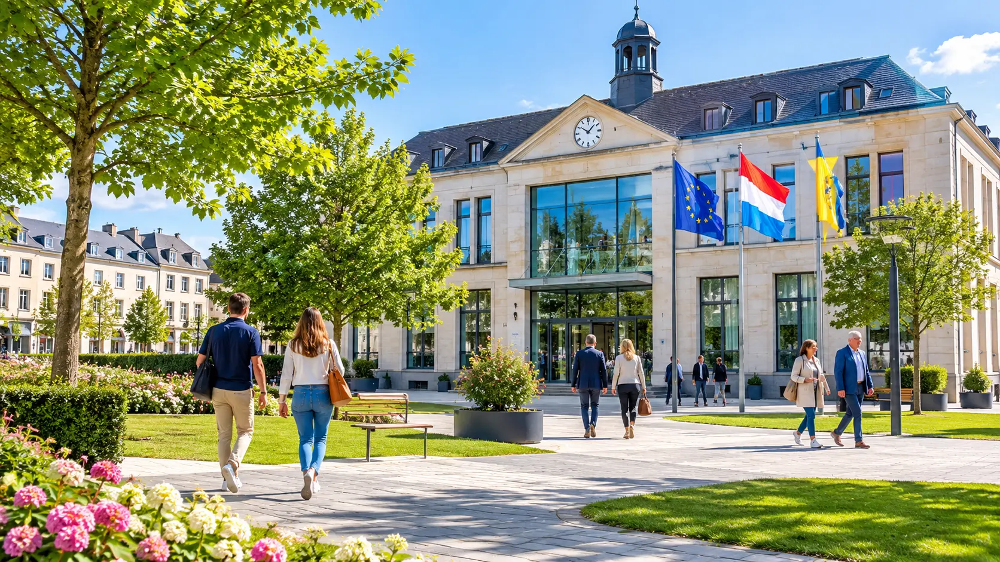
E. ARCH Kommunale und öffentliche DiensteFür Gemeinden, öffentliche Einrichtungen und lokale Dienstleistungsorganisationen.Mehr erfahrenÖffentliche Dienste hängen von Menschen ab, die direkt mit Gemeinschaften, Infrastruktur, sozialen Bedürfnissen und wechselnden lokalen Bedingungen arbeiten.
Kommunale Mitarbeitende, Sozialarbeiter, Teams öffentlicher Dienste und Gemeinschaftskoordinatoren können hohe Arbeitsbelastung, emotionalen Druck und komplexe Verantwortung erleben.
ARCH schlägt anpassbare Programme vor, die das Wellbeing der Belegschaft mit stärkeren und widerstandsfähigeren öffentlichen Diensten verbinden.
ARCH kann Gemeinden helfen, integrierte Ansätze für Wellbeing der Belegschaft, gemeinschaftliche Teilhabe, digitale Inklusion und soziale Resilienz zu entwickeln.
Programme können an die Prioritäten und Ressourcen einzelner Gemeinden und lokaler Einrichtungen angepasst werden.
Gemeinden, Ministerien, öffentliche Behörden, Sozialdienste, Gemeinschaftszentren, öffentliche Versorgungsbetriebe, lokale Vereine und Regionalentwicklungsorganisationen.
Gesundheits-, Bildungs- und Forschungsumgebungen sind auf anhaltende Konzentration, professionelles Urteilsvermögen, Kommunikation und die Fähigkeit angewiesen, komplexe Arbeitsbelastungen zu bewältigen.
ARCH untersucht Möglichkeiten, diese Umgebungen durch menschenzentriertes Training, Wellbeing-Programme und gemeinsame Forschung zu unterstützen.
Programme können an die Prioritäten jeder Einrichtung angepasst und durch Pilotkooperation entwickelt werden.
Krankenhäuser, Gesundheitsnetzwerke, Universitäten, Berufsschulen, Forschungszentren, Bildungsstiftungen, berufliche Ausbildungsorganisationen und Technologieentwickler.
Resilienz ist nicht nur eine organisatorische oder industrielle Herausforderung. Sie ist auch ein grundlegendes Element gesunder und nachhaltiger Gemeinschaften.
ARCH hat eine gemeinschaftliche Dimension, die Teilhabe, Wellbeing, soziale Verbundenheit, persönliche Entwicklung und Anpassung an veränderte Umstände unterstützen soll.
ARCH möchte Gemeinschaften helfen, Zugang zu praktischen Werkzeugen für persönliche Entwicklung, Wellbeing und soziale Teilhabe zu erhalten und zugleich Möglichkeiten der Zusammenarbeit zwischen öffentlichen Einrichtungen, Zivilgesellschaft und Technologiepartnern zu schaffen.
Gemeinden, soziale Organisationen, Stiftungen, NGOs, Gemeinschaftszentren, Organisationen zur Unterstützung von Veteranen, Integrationsdienste und Bildungseinrichtungen.
Menschenzentrierte Ansätze mit neuen Technologien verbinden
ARCH untersucht, wie geeignete Technologien ein besseres Verständnis menschlicher Leistungsfähigkeit und die Entwicklung von Resilienzprogrammen unterstützen können. Technologie ist kein Selbstzweck. Sie ist ein Werkzeug, das klar definierten menschlichen, organisatorischen und Forschungszwecken dienen soll.
Tragbare Geräte und physiologische Sensoren können für ausgewählte Pilotprogramme nützliche Informationen liefern.
Mögliche Anwendungen:
ARCH erkundet den Einsatz tragbarer Technologien, einschließlich Polar H10, im Rahmen ihrer anfänglichen Entwicklungs- und Pilotaktivitäten.
Messungen müssen innerhalb ihrer technischen und kontextuellen Grenzen interpretiert werden. Einzelne physiologische Indikatoren können für sich genommen weder das Stress-, Müdigkeits-, Gesundheits- noch das Einsatzfähigkeitsniveau einer Person feststellen.
ARCH möchte KI-gestützte Werkzeuge zur Ordnung und Interpretation relevanter Informationen erkunden.
Mögliche Funktionen:
Jeder Einsatz von KI muss zweckgebunden, transparent und angemessener menschlicher Aufsicht unterworfen sein.
Simulation bietet die Möglichkeit, menschliche Reaktionen auf komplexe Situationen in kontrollierten Lernumgebungen zu untersuchen.
Mögliche Anwendungen:
ARCH behandelt nicht. ARCH erkennt, informiert und empfiehlt. Sie ergänzt — und ersetzt niemals — Gesundheitsversorgung, Sozialdienste und klinisches Urteil.
Die Teilnahme am Monitoring ist freiwillig, und persönliches Monitoring soll nicht zur Mitarbeiterüberwachung werden.
Möchten Sie eine der ersten Pilotorganisationen in Luxemburg werden? Pilotprogramme werden auf die Größe der Organisation und die gewählten Module zugeschnitten.
Eine Initiative von KOLOSVIT ASBL, Luxemburg.